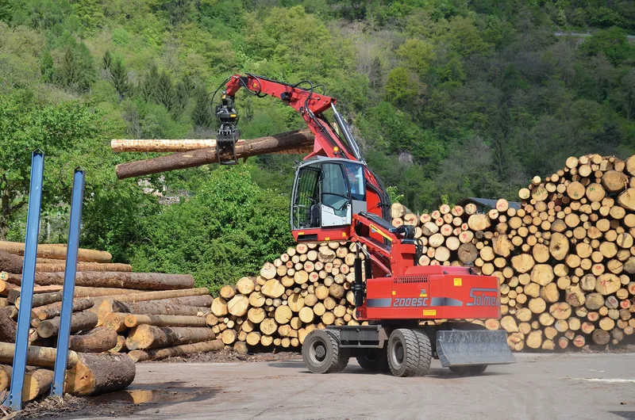
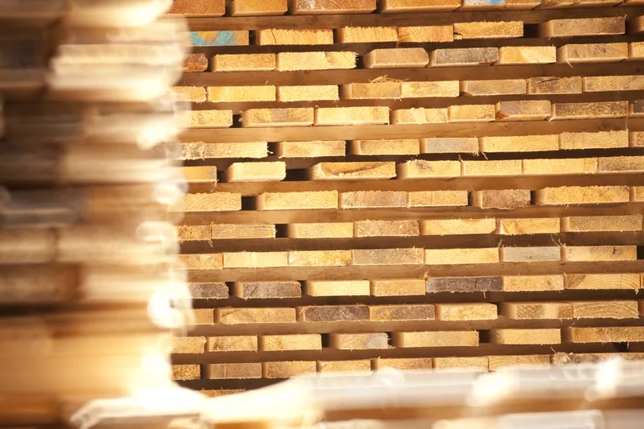
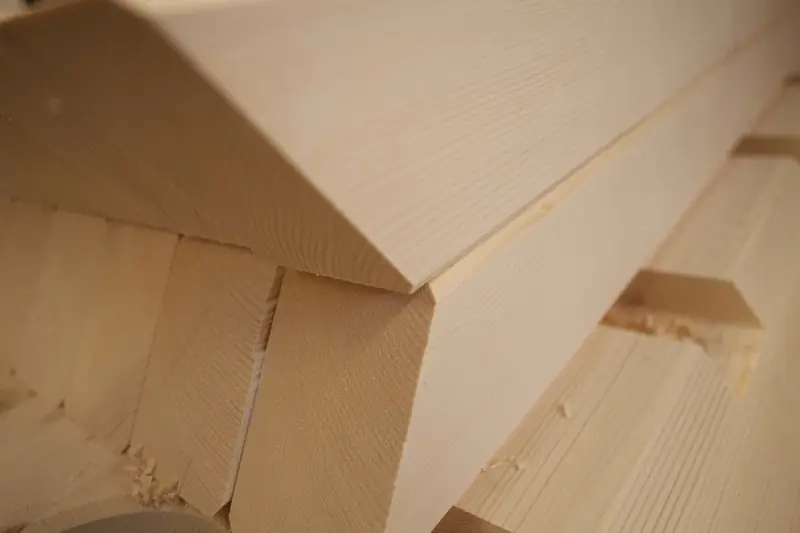
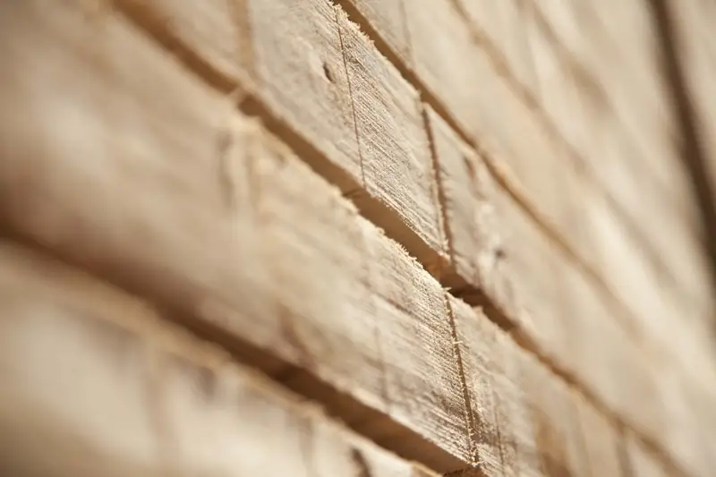
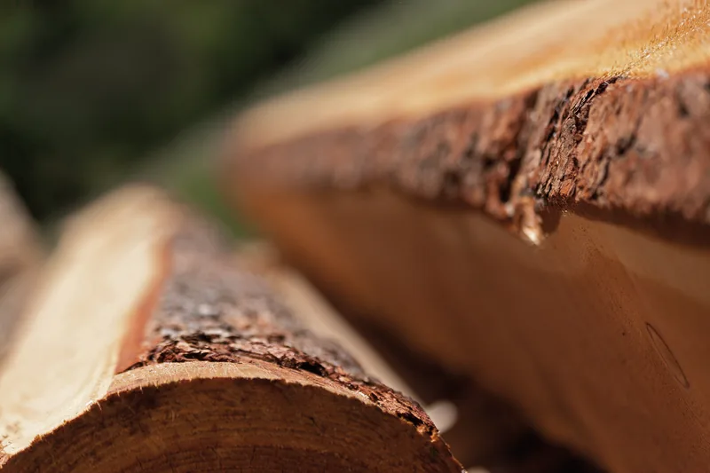

Dal tronco al prodotto finito
Curiamo tutta la filiera del legno: dall'arrivo dei tronchi alla gestione degli scarti, passando per ogni lavorazione.

Tutta la strada del legno
Ogni tronco che entra in piazzale esce come trave, tavola, perlina o elemento di un tetto. Quello che avanza non si butta.
-
Approvvigionamento
Il legname arriva in tronchi. Quello per il massello viene in gran parte da foreste del Trentino certificate PEFC.

-
Segagione
La doppia linea Primultini trasforma il tronco in assortimenti con facce piane e parallele fra loro. Accanto lavorano un impianto multilame e un refendino.

-
Essiccazione a forno
Negli essiccatoi il legno perde l'acqua che contiene. Per il massello strutturale è quello che lo tiene stabile una volta in opera.

-
Piallatura
Per spianare e lisciare il legno, e per il piallato a faccia a vista.

-
Taglio a controllo numerico
Il centro Hundegger K2 fa i tagli degli elementi strutturali: incastri, nodi, sedi per piastre, spinotti e bulloni.

-
Finiture
- Impregnazione con la tinta che scegliete, necessaria per il legno esposto alle intemperie e a forti sollecitazioni.
- Rusticatura, per dare al legno il tipico aspetto antico.
- Spazzolatura e asciugatura.
- Sagome di testa per gli elementi strutturali.

-
Niente si butta
La segatura va a impianti che la trasformano in pellet. Gli scarti di lavorazione vengono macinati e mandati alle centrali di riscaldamento a biomassa della regione.

Raccontateci il lavoro
Bastano due righe: che lavoro è, in che comune e più o meno che misure. Se avete un progetto o delle foto, meglio ancora. Poi vi richiamiamo noi.
Telefono 0465 621159 · info@segheria-lombardi.it